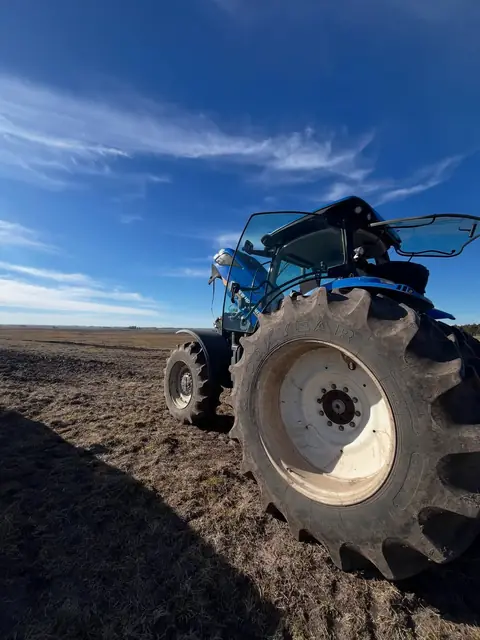
Área 1
Alderamín Mecánica Agrícola
Todas las marcas de tractores. Servicio autorizado Massey Ferguson. Maquinaria vial y excavadoras.
Consultar Agrícola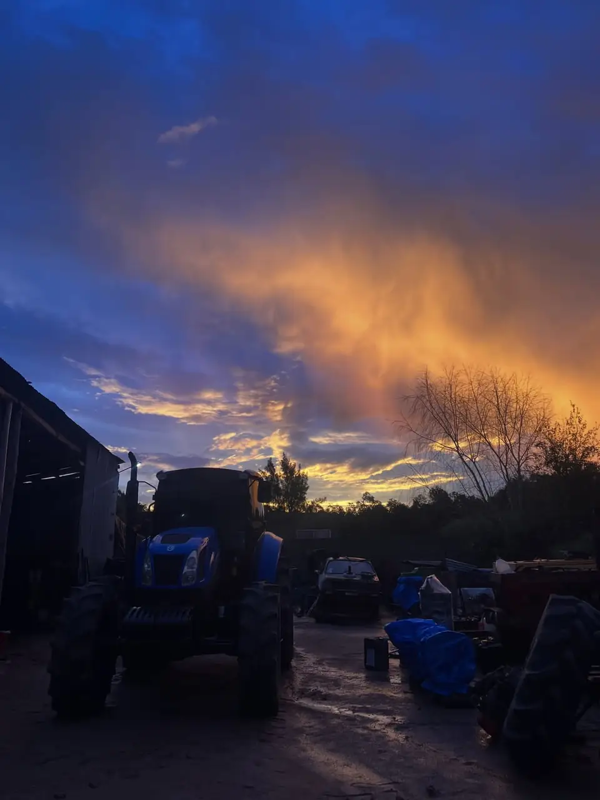
Un mismo taller en Melo para tu tractor, tu camión y tu 4x4. Todas las marcas de tractores, servicio autorizado Massey Ferguson y diagnóstico computarizado con escáner.
Alderamín reúne tres áreas: Mecánica Agrícola, Mecánica de Camiones y 4x4. Trabajamos en el taller y también salimos al campo, para que la máquina pare lo menos posible.
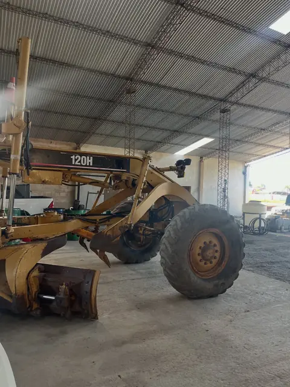
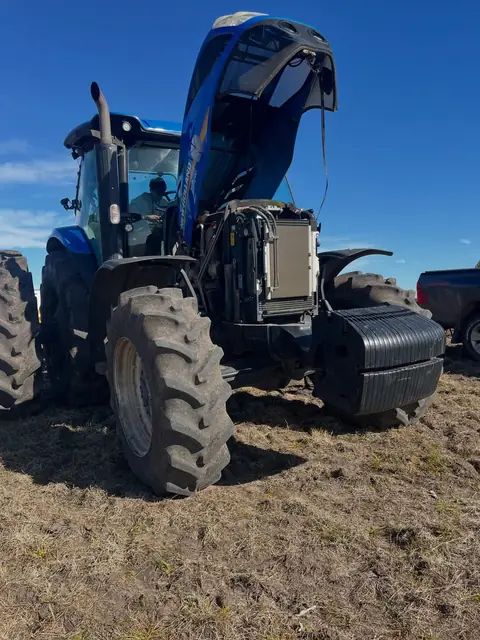
Elegí el área y escribinos directo por WhatsApp.

Todas las marcas de tractores. Servicio autorizado Massey Ferguson. Maquinaria vial y excavadoras.
Consultar Agrícola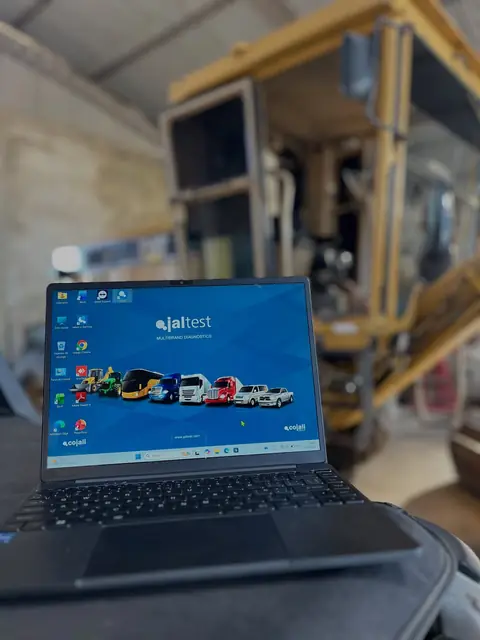
Mecánica de camiones en el mismo taller de Melo. Contanos qué camión tenés y qué le pasa.
Consultar Camiones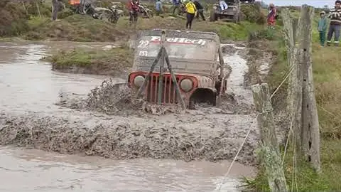
Mecánica para vehículos 4x4, de gente que también sale al barro: mirá nuestras travesías en YouTube.
Consultar 4x4Leemos las fallas electrónicas con escáner Jaltest y vamos directo al problema, sin probar a ciegas.
Reparación y mantenimiento de tractores de todas las marcas: motor, transmisión, hidráulica y más.
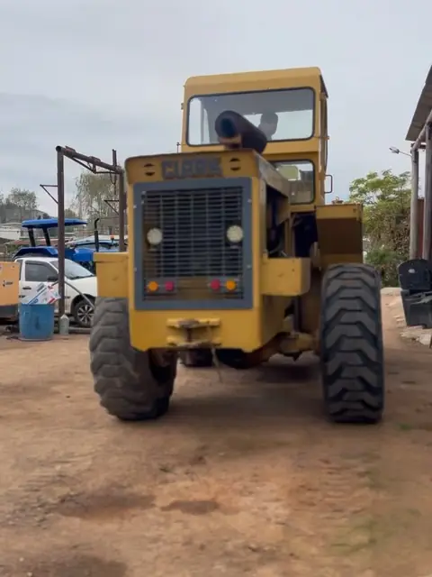
Somos servicio autorizado Massey Ferguson. Tu tractor MF atendido como corresponde.
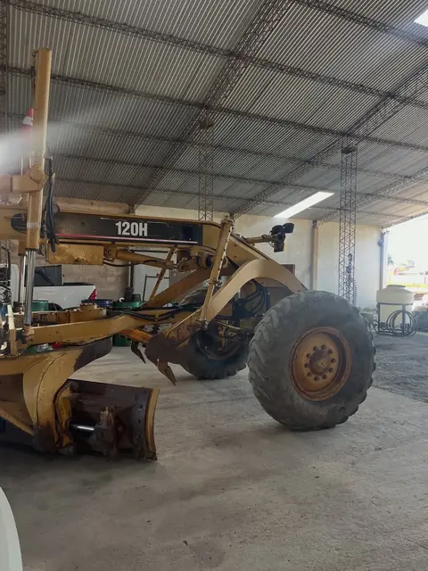
Motoniveladoras, palas cargadoras y equipos pesados como Caterpillar, Clark o Michigan.
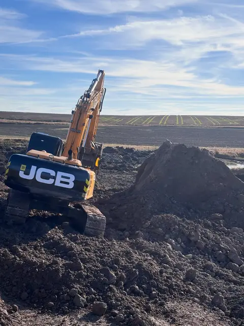
Diagnóstico y reparación de excavadoras para que vuelvan a la obra o al campo.
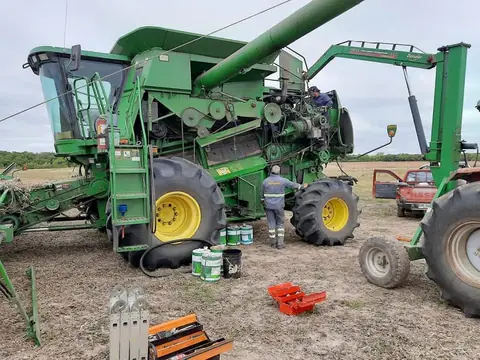
Si la máquina no se puede mover, vamos hasta donde está. Coordinalo por WhatsApp.
Fotos de nuestro Instagram y Facebook: el taller, el patio y el trabajo en el campo.
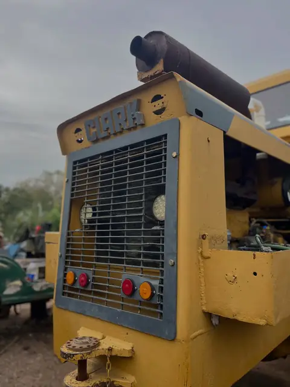
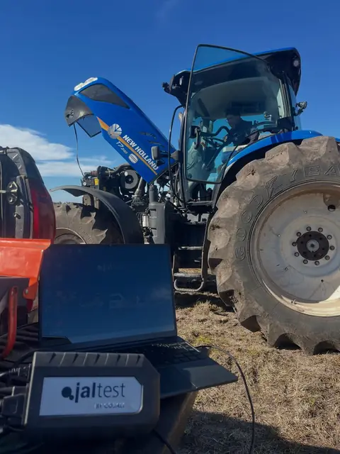
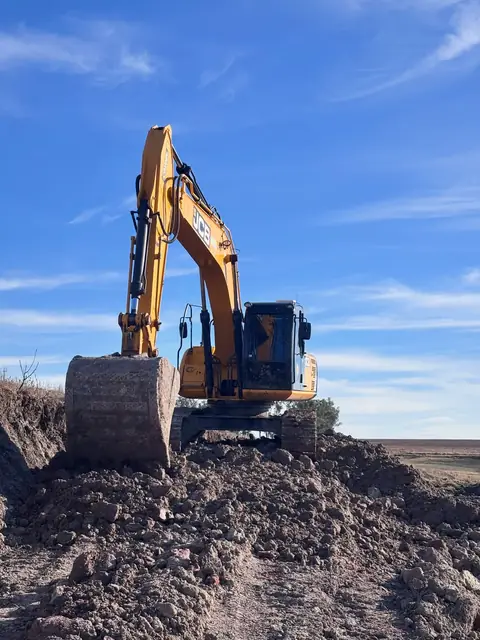
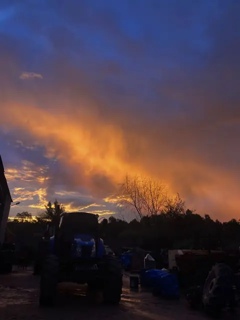
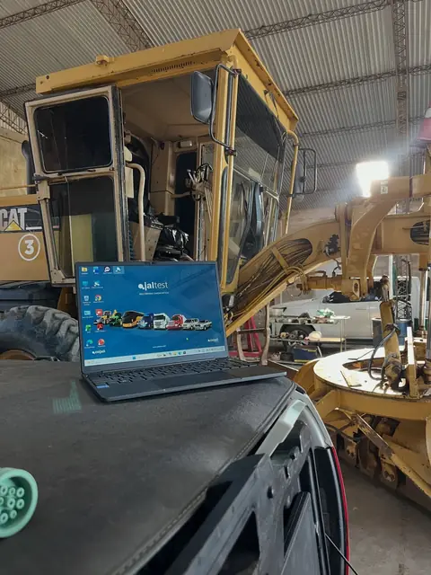
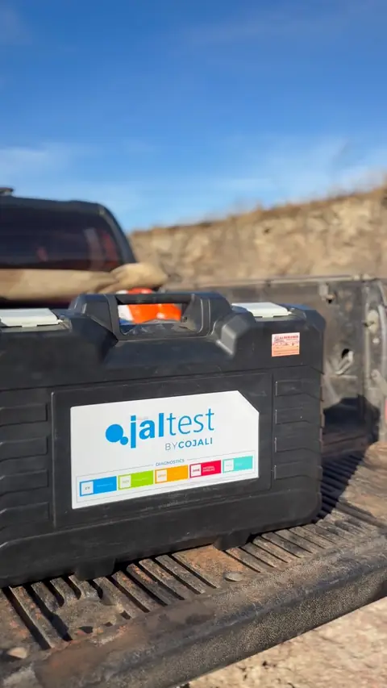
Los videos más vistos de nuestro canal alderamin offroad. Si tu 4x4 aguanta esto, que la atienda alguien que también la usa. Tocá un video para verlo.
Cuatro pasos desde que nos escribís hasta que la máquina vuelve a trabajar.
Contanos por WhatsApp qué máquina es y qué le pasa. Si podés, mandá una foto o un video.
Revisamos la máquina en el taller o en el campo, con escáner cuando hace falta.
Te explicamos la falla y lo que hay que hacer antes de arrancar.
Hacemos el trabajo y te devolvemos la máquina lista para seguir.
Tractores de cualquier marca, además de maquinaria vial.
Servicio autorizado Massey Ferguson.
Escáner Jaltest para fallas electrónicas.
Atención donde está la máquina.
★★★★★“Impecable atención al cliente”Opinión en Google
★★★★★“Muy buen servicio y muy macanuda la gente de allí”Opinión en Google
★★★★☆“Trabajos de mecánica en maquinaria agrícola. Muy buen servicio”Opinión en Google
Completá el formulario y se abre WhatsApp con tu consulta lista para enviar. Te respondemos a la brevedad.